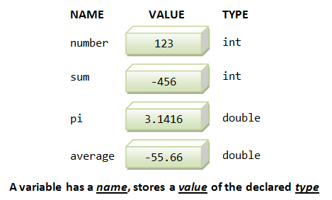
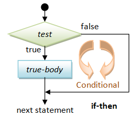
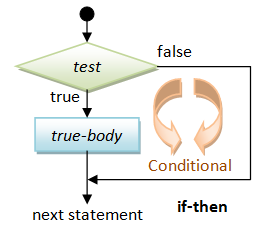

Getting Started - Write our First Hello-world C++ Program
Let us begin by writing our first C++ program that prints the message "hello, world" on the display console.
Step 1: Write the Source Code: Enter the following source codes using a programming text editor (such as NotePad++ for Windows or gedit for UNIX/Linux/Mac) or an Interactive Development Environment (IDE) (such as CodeBlocks, Eclipse, NetBeans or Visual Studio - Read the respective "How-To" article on how to install and get started with these IDEs).
Do not enter the line numbers (on the left panel), which were added to help in the explanation. Save the source file as "hello.cpp". A C++ source file should be saved with a file extension of ".cpp". You should choose a filename which reflects the purpose of the program.
1 2 3 4 5 6 7 8 9 10 |
/* * First C++ program that says hello (hello.cpp) */ #include <iostream> // Needed to perform IO operations using namespace std; int main() { // Program entry point cout << "hello, world" << endl; // Say Hello return 0; // Terminate main() } // End of main function |
Step 2: Build the Executable Code: Compile and Link (aka Build) the source code "hello.cpp" into executable code ("hello.exe" in Windows or "hello" in UNIX/Linux/Mac).
- On IDE (such as CodeBlocks), push the "Build" button.
- On Text editor with the GNU GCC compiler, start a CMD Shell (Windows) or Terminal (UNIX/Linux/Mac) and issue these commands:
// Windows (CMD shell) - Build "hello.cpp" into "hello.exe" > g++ -o hello.exe hello.cpp // UNIX/Linux/Mac (Bash shell) - Build "hello.cpp" into "hello" $ g++ -o hello hello.cpp
whereg++is the name of GCC C++ compiler;-ooption specifies the output filename ("hello.exe" for Windows or "hello" for UNIX/Linux/Mac); "hello.cpp" is the input source file.
Step 3: Run the Executable Code: Execute (Run) the program.
- On IDE (such as CodeBlocks), push the "Run" button.
- On Text Editor with GNU GCC compiler, issue these command from CMD Shell (Windows) or Terminal (UNIX/Linux/Mac):
// Windows (CMD shell) - Run "hello.exe" (.exe is optional) > hello hello, world // UNIX/Linux/Mac (Bash shell) - Run "hello" (./ denotes the current directory) $ ./hello hello, world
Brief Explanation of the Program
/* ...... */
// ... until the end of the line
These are called comments. Comments are NOT executable and are ignored by the compiler; but they provide useful explanation and documentation to your readers (and to yourself three days later). There are two kinds of comments:
- Multi-line Comment: begins with
/*and ends with*/. It may span more than one lines (as in Lines 1-3). - End-of-line Comment: begins with
//and lasts until the end of the current line (as in Lines 4, 7, 8, 9 and 10).
#include <iostream>
using namespace std;
The "#include" is called a preprocessor directive. Preprocessor directives begin with a # sign. They are processed before compilation. The directive "#include <iostream>" tells the preprocessor to include the "iostream" header file to support input/output operations. The "using namespace std;" statement declares std as the default namespace used in this program. The names cout and endl, which is used in this program, belong to the std namespace. These two lines shall be present in all our programs. I will explain their meaning later.
int main() { ... body ... }
defines the so-called main() function. The main() function is the entry point of program execution. main() is required to return an int (integer).
cout << "hello, world" << endl;
"cout" refers to the standard output (or Console OUTput). The symbol << is called the stream insertion operator (or put-to operator), which is used to put the string "hello, world" to the console. "endl" denotes the END-of-Line or newline, which is put to the console to bring the cursor to the beginning of the next line.
return 0;
terminates the main() function and returns a value of 0 to the operating system. Typically, return value of 0 signals normal termination; whereas value of non-zero (usually 1) signals abnormal termination. This line is optional. C++ compiler will implicitly insert a "return 0;" to the end of the main() function.
C++ Terminology and Syntax
Statement: A programming statement performs a piece of programming action. It must be terminated by a semicolon (;) (just like an English sentence is ended with a period), as in Lines 5, 8 and 9.
Preprocessor Directive: The #include (Line 4) is a preprocessor directive and NOT a programming statement. A preprocessor directive begins with hash sign (#). It is processed before compiling the program. A preprocessor directive is NOT terminated by a semicolon - take note of this unusual rule.
Block: A block is a group of programming statements enclosed by braces { }. This group of statements is treated as one single unit. There is one block in this program, which contains the body of the main() function. There is no need to put a semicolon after the closing brace.
Comments: A multi-line comment begins with /* and ends with */, which may span more than one line. An end-of-line comment begins with // and lasts till the end of the line. Comments are NOT executable statements and are ignored by the compiler; but they provide useful explanation and documentation. Use comments liberally.
Whitespaces: Blank, tab, and newline are collectively called whitespaces. Extra whitespaces are ignored, i.e., only one whitespace is needed to separate the tokens. Nevertheless, extra white spaces and newlines could help you and your readers better understand your program. Use extra whitespaces and newlines liberally.
Case Sensitivity: C++ is case sensitive - a ROSE is NOT a Rose, and is NOT a rose.
The Process of Writing a C++ Program

Step 1: Write the source codes (.cpp) and header files (.h).
Step 2: Pre-process the source codes according to the preprocessor directives. Preprocessor directives begin with a hash sign (#), e.g., #include and #define. They indicate that certain manipulations (such as including another file or replacement of symbols) are to be performed BEFORE compilation.
Step 3: Compile the pre-processed source codes into object codes (.obj, .o).
Step 4: Link the compiled object codes with other object codes and the library object codes (.lib, .a) to produce the executable code (.exe).
Step 5: Load the executable code into computer memory.
Step 6: Run the executable code, with the input to produce the desried output.
C++ Program Template
You can use the following template to write your C++ programs. Choose a meaningful filename for you source file that reflects the purpose of your program with file extension of ".cpp". Write your programming statements inside the body of the main() function. Don't worry about the other terms for the time being. I will explain them later.
1 2 3 4 5 6 7 8 9 10 11 |
/* * Comment to state the purpose of this program (filename.cpp) */ #include <iostream> using namespace std; int main() { // Your Programming statements HERE! return 0; } |
Output via "cout <<"
In C++, output to the display console is done via "cout" and the stream insertion (or put-to) operator <<. You can print as many items as you wish to cout, by chaining the items with the << operator. For example,
cout << "hello" << " world, " << "again!" << endl; cout << "hello," << endl << "one more time. " << endl << 5 << 4 << 3 << " " << 2.2 << " " << 1.1 << endl;
A special symbol called endl (END-of-Line) can be used to produce a newline. Whenever an endl is printed, there is no visible output, but the cursor advances to the beginning (left-margin) of the next line. A string, which is enclosed by a pair of double quotes, will be printed as it is, including the white spaces and punctuation marks within the double quotes. Integers (such as 1, 2, 3) and floating-point numbers (such as 1.1, 2.2) can be printed too. The output for the above two output statements is as follows where the underscore denotes the final cursor position.
hello world, again! hello, one more time. 543 2.2 1.1 _
Beside the endl, you can also use '\n', which denotes a newline character, to advance the cursor to the next line. Similarly, you could use '\t', which denote a tab character, to advance the cursor to the next tab position. '\n' and '\t' are known as escape sequences representing ASCII codes Hex 0A (line-feed) and Hex 09 (tab), respectively. For example,
cout << "hello world, again!\n"; cout << "\thello,\none\tmore\ttime.\n";
The output shall look like (the exact tab stop positions depend on your system's setting - eight spaces is used here):
hello world, again!
hello,
one more time.
_
Notes: I strongly recommend that you use endl to print a newline, instead of '\n'. This is because line delimiter is system dependent: Windows use "\r\n"; UNIX/Linux/Mac use '\n'. The endl produces system-specific newline. Furthermore, endl guarantees that the output is flushed; while '\n' does not.
Exercises
- Write programs called
PrintPatternX.cpp(whereXfromAtoD) to print EACH of the following patterns. Use one "cout <<" for each line of outputs. End each line by printing an "endl".* * * * * * * * * * * * * * * * * * * * * * * * * * * * * * * * * * * * * * * * * * * * * * * * * * * * * * * * * * * * * (a) (b) (c) (d)
- Print the above patterns using ONE "
cout <<" statement.
Input via "cin >>"
Let's write a program (called "Add2Numbers.cpp") that prompts user for two integers and prints their sum.
1 2 3 4 5 6 7 8 9 10 11 12 13 14 15 16 17 18 19 20 21 22 23 24 25 26 27 28 29 30 31 32 |
/* * Prompt user for two integers and print their sum, difference, product and quotient * (IntegerArithmetic.cpp) */ #include <iostream> using namespace std; int main() { int firstInt; // Declare a variable named firstInt of the type int (integer) int secondInt; // Declare a variable named secondInt of the type int int sum, difference, product, quotient; // Declare 4 variables of the type int to keep the results cout << "Enter first integer: "; // Display a prompting message cin >> firstInt; // Read input from keyboard (cin) into firstInt cout << "Enter second integer: "; // Display a prompting message cin >> secondInt; // Read input into secondInt // Perform arithmetic operations sum = firstInt + secondInt; difference = firstInt - secondInt; product = firstInt * secondInt; quotient = firstInt / secondInt; // Print the results cout << "The sum is: " << sum << endl; cout << "The difference is: " << difference << endl; cout << "The product is: " << product << endl; cout << "The quotient is: " << quotient << endl; return 0; } |
Enter first integer: 99 Enter second integer: 4 The sum is: 103 The difference is: 95 The product is: 396 The quotient is: 24
Dissecting the Program
int firstInt;
int secondInt;
int sum, difference, product, quotient;
We first declare various int (integer) variables. A variable is a named storage location that can store a value of a particular data type, in this case, int (integer). You can declare one variable in one statement (as in the first two statements). You could also declare many variables in one statement separating with commas (as in the third statement).
cout << "Enter first integer: ";
We use "cout <<" to put up a prompting message.
cin >> firstInt;
We then use "cin >> firstInt" to read the user input from the keyboard and store the value into variable firstInt. cin is known as the standard input device (or Console INput), i.e., keyboard, and >> is known as stream extraction operator.
Arithmetic Operators: +, =, *, /
We used arithmetic operators +, _, *, / to compute the sum, difference, product and quotient. Take note that integer division produces a truncated integer quotient (e.g., 99/4 gives 24).
Reading multiple items in one cin statement
We could read more than one values in one cin statement. For example,
cout << "Enter two integers (separated by space): "; // Put out a prompting message cin >> firstInt >> secondInt; // Read two values into respective variables sum = firstInt + secondInt; cout << "The sum is: " << sum << endl;
Enter two integers: 77 88 The sum of 77 and 88 is 165
Take note that the two integer values that you entered must be separated by a space.
Exercises
- Follow the above example, write a program called
FiveIntegerArithmetic.cppto prompt user for 5 integers, with 5 "cin >>" statements, and print their sum and product. Use fiveintvariablesinteger1tointeger5to store the five integers. - Repeat the above using one "
cin >>" statement to read 5 integers.
What is a Program?

A program is a sequence of instructions (called programming statements), executing one after another - usually in a sequential manner, as illustrated in the previous example and the following flow chart.
Example (Sequential): The following program (CircleComputation.cpp) prompts user for the radius of a circle, and prints its area and circumference. Take note that the programming statements are executed sequentially - one after another in the order that they are written.
1 2 3 4 5 6 7 8 9 10 11 12 13 14 15 16 17 18 19 20 21 22 23 24 25 |
/* * Prompt user for the radius of a circle and compute its area and circumference * (CircleComputation.cpp) */ #include <iostream> using namespace std; int main() { double radius, circumference, area; // Declare 3 floating-point variables const double PI = 3.14159265; // Declare and define PI cout << "Enter the radius: "; // Prompting message cin >> radius; // Read input into variable radius // Compute area and circumference area = radius * radius * PI; circumference = 2.0 * radius * PI; // Print the results cout << "The radius is: " << radius << endl; cout << "The area is: " << area << endl; cout << "The circumference is: " << circumference << endl; return 0; } |
Enter the radius: 1.2 The radius is: 1.2 The area is: 4.52389 The circumference is: 7.53982
Dissecting the Program
double radius, circumference, area;
const double PI = 3.14159265;
We declare three double variables called radius, circumference and area. A double variable, unlike int, can hold real number (or floating-point number) such as 1.23 or 4.5e6. We also declare a "constant" double variable called PI, whose value cannot be changed, and initialize its value to 3.14159265.
cout << "Enter the radius: ";
cin >> radius;
We use "cout <<" to put up a prompt message, and "cin >>" to read the user input into variable radius.
area = radius * radius * PI;
circumference = 2.0 * radius * PI;
perform the computation.
cout << "The radius is: " << radius << endl;
cout << "The area is: " << area << endl;
cout << "The circumference is: " << circumference << endl;
print the results.
Take note that the programming statements inside the main() are executed one after another, sequentially.
Exercises
- Follow the above example, write a program called
RetanguleComputation.cppto print the area and perimeter of a rectangle. Your program shall prompt the user for the length and width of the rectangle, indoubles. - Follow the above example, write a program called
CylinderComputation.cppto print the surface area and volume of a cylinder. Your program shall prompt the user for the radius and height of the cylinder, indoubles.
What is a Variable?
Computer programs manipulate (or process) data. A variable is used to store a piece of data for processing. It is called variable because you can change the value stored.
More precisely, a variable is a named storage location, that stores a value of a particular data type. In other words, a variable has a "name", a "type" and stores a "value" of that type.
- A variable has a "name" (or identifier), e.g.,
radius,area,sum. The name is needed to uniquely identify and reference a variable, so as to assign a value to the variable (e.g.,radius=1.2), and retrieve the value stored (e.g.,area = radius*radius*PI). - A variable has a "type". Examples of type are:
int: for integers (whole numbers) such as123and-456;double: for floating-point or real numbers, such as3.1416,-55.66,7.8e9,1.2e3,-4.5e-6having a decimal point and fractional part, in fixed or scientific notations.
- A variable can store a "value" of the declared type. It is important to take note that a variable is associated with a type, and can only store value of that particular type. For example, a
intvariable can store an integer value such as123, but NOT real number such as12.34, nor texts such as"Hello". The concept of type was introduced into the early programming languages to simplify interpretation of data.
The above diagram illustrates 2 types of variables: int and double. An int variable stores an integer (whole number). A double variable stores a real number.
To use a variable, you need to first declare its name and type, in one of the following syntaxes:
// Syntax: Declare a variable of a type var-type var-name; // Example: int sum; double radius; // Syntax: Declare multiple variables of the same type var-type var-name-1, var-name-2,...; // Example: int sum, difference, product, quotient; double area, circumference; // Syntax: Declare a variable of a type, and assign an initial value var-type var-name = initial-value; // Example: int sum = 0; double pi = 3.14159265; // Syntax: Declare multiple variables of the same type with initial values var-type var-name-1 = initial-value-1, var-name-2 = initial-value-2,... ; // Example: int firstNumber = 1, secondNumber = 2;
Take note that:
- Each declaration statement is terminated with a semicolon (
;). - In multiple-variable declaration, the names are separated by commas (
,). - The symbol
=, known as the assignment operator, can be used to assign an initial value (of the declared type) to the variable.
Once a variable is declared, you can assign and re-assign a value to a variable, via the assignment operator "=". For example,
int number; // Declare a variable named "number" of the type "int" (integer) number = 99; // Assign an integer value of 99 to the variable "number" number = 88; // Re-assign a value of 88 to "number" number = number + 1; // Evaluate "number + 1", and assign the result back to "number" int sum = 0; // Declare an int variable named sum and assign an initial value of 0 sum = sum + number; // Evaluate "sum + number", and assign the result back to "sum", i.e. add number into sum int num1 = 5, num2 = 6; // Declare and initialize two int variables in one statement, separated by a comma double radius = 1.5; // Declare a variable name radius, and initialize to 1.5 int number; // ERROR: A variable named "number" has already been declared sum = 55.66; // WARNING: The variable "sum" is an int. It shall not be assigned a floating-point number sum = "Hello"; // ERROR: The variable "sum" is an int. It cannot be assigned a text string
Take note that:
- Each variable can only be declared once.
- You can declare a variable anywhere inside the program, as long as it is declared before it is being used.
- Once the type of a variable is declared, it can only store a value belonging to this particular type. For example, an
intvariable can hold only integer such as123, and NOT floating-point number such as-2.17or text string such as"Hello". - The type of a variable cannot be changed inside the program.
x=x+1? x+y=1?
Assignment (=) in programming is different from equality in Mathematics. e.g., "x=x+1" is invalid in Mathematics. However, in programming, it means compute the value of x plus 1, and assign the result back to variable x.
"x+y=1" is valid in Mathematics, but is invalid in programming. In programming, the RHS of "=" has to be evaluated to a value; while the LHS shall be a variable.
That is, evaluate the RHS first, then assign to LHS.
Some languages uses := as the assignment operator to avoid confusion with equality.
Basic Arithmetic Operations
The basic arithmetic operators are:
| Operator | Meaning | Example |
|---|---|---|
+ |
Addition | x + y |
- |
Subtraction | x - y |
* |
Multiplication | x * y |
/ |
Division | x / y |
% |
Modulus (Remainder) | x % y |
++ |
Increment by 1 (Unary) | ++x or x++ |
-- |
Decrement by 1 (Unary) | --x or x-- |
Addition, subtraction, multiplication, division and remainder are binary operators that take two operands (e.g., x + y); while negation (e.g., -x), increment and decrement (e.g., x++, --x) are unary operators that take only one operand.
Example
The following program (TestArithmetics.cpp) illustrates these arithmetic operations:
1 2 3 4 5 6 7 8 9 10 11 12 13 14 15 16 17 18 19 20 21 22 23 24 25 26 27 28 29 30 31 32 33 34 35 36 37 38 39 40 41 42 43 44 |
/* * Test arithmetic operations (TestArithmetics.cpp) */ #include <iostream> using namespace std; int main() { int number1, number2; // Declare 2 integer variable number1 and number2 int sum, difference, product, quotient, remainder; // declare 5 int variables // Prompt user for the two numbers cout << "Enter two integers (separated by space): "; cin >> number1 >> number2; // Do arithmetic Operations sum = number1 + number2; difference = number1 - number2; product = number1 * number2; quotient = number1 / number2; remainder = number1 % number2; cout << "The sum, difference, product, quotient and remainder of " << number1 << " and " << number2 << " are " << sum << ", " << difference << ", " << product << ", " << quotient << ", and " << remainder << endl; // Increment and Decrement ++number1; // Increment the value stored in variable number1 by 1 // same as "number1 = number1 + 1" --number2; // Decrement the value stored in variable number2 by 1 // same as "number2 = number2 - 1" cout << "number1 after increment is " << number1 << endl; cout << "number2 after decrement is " << number2 << endl; quotient = number1 / number2; cout << "The new quotient of " << number1 << " and " << number2 << " is " << quotient << endl; return 0; } |
Enter two integers: 98 5 The sum, difference, product, quotient and remainder of 98 and 5 are 103, 93, 49 0, 19, and 3 number1 after increment is 99 number2 after decrement is 4 The new quotient of 99 and 4 is 24
Dissecting the Program
int number1, number2;
int sum, difference, product, quotient, remainder;
declare all the int (integer) variables number1, number2, sum, difference, product, quotient, and remainder, needed in this program.
cout << "Enter two integers (separated by space): ";
cin >> number1 >> number2;
prompt user for two integers and store into number1 and number2, respectively.
sum = number1 + number2;
difference = number1 - number2;
product = number1 * number2;
quotient = number1 / number2;
remainder = number1 % number2;
carry out the arithmetic operations on number1 and number2. Take note that division of two integers produces a truncated integer, e.g., 98/5 → 19, 99/4 → 24, and 1/2 → 0.
cout << "The sum, difference, product, quotient and remainder of "
<< number1 << " and " << number2 << " are "
<< sum << ", "
<< difference << ", "
<< product << ", "
<< quotient << ", and "
<< remainder << endl;
prints the results of the arithmetic operations, with the appropriate string descriptions in between. Take note that text strings are enclosed within double-quotes, and will get printed as they are, including the white spaces (but without the double quotes). To print the value stored in a variable, no double quotes should be used. For example,
cout << "sum"; // Print text string "sum" - as it is cout << sum; // Print the value stored in variable sum, e.g., 98
++number1;
--number2;
illustrate the increment and decrement operations. Unlike '+', '-', '*', '/' and '%', which work on two operands (binary operators), '++' and '--' operate on only one operand (unary operators). ++x is equivalent to x = x + 1, i.e., increment x by 1. You may place the increment operator before or after the operand, i.e., ++x (pre-increment) or x++ (post-increment). In this example, the effects of pre-increment and post-increment are the same. I shall point out the differences in later section.
Exercises
- Introduce one more
intvariable callednumber3, and prompt user for its value. Print the sum and product of all the three integers. - In Mathematics, we could omit the multiplication sign in an arithmetic expression, e.g.,
x = 5a + 4b. In programming, you need to explicitly provide all the operators, i.e.,x = 5*a + 4*b. Try printing the sum of31times ofnumber1and17times ofnumber2and87time ofnumber3.
What If Your Need To Add a Thousand Numbers? Use a Loop!
Suppose that you want to add all the integers from 1 to 1000. If you follow the previous examples, you would require a thousand-line program! Instead, you could use a loop in your program to perform a repetitive task, that is what the dumb computers are good at.
Example
Try the following program SumNumbers.cpp, which sums all the integers from 1 to an upperbound provided by the user, using a so-called while-loop.
1 2 3 4 5 6 7 8 9 10 11 12 13 14 15 16 17 18 19 20 21 22 23 24 25 26 |
/* * Sum from 1 to an upperbound using a while-loop (SumNumbers.cpp). */ #include <iostream> using namespace std; int main() { int sum = 0; // Declare an int variable sum to accumulate the numbers // Set the initial sum to 0 int upperbound; // Sum from 1 to this upperbound // Prompt user for an upperbound cout << "Enter the upperbound: "; cin >> upperbound; // Use a loop to repeatedly add 1, 2, 3,..., up to upperbound int number = 1; while (number <= upperbound) { sum = sum + number; // accumulate number into sum ++number; // increment number by 1 } // Print the result cout << "The sum from 1 to " << upperbound << " is " << sum << endl; return 0; } |
Enter the upperbound: 10000 The sum from 1 to 10000 is 50005000
Dissecting the Program
int sum = 0;
declares an int variable named sum and initializes it to 0. This variable will be used to accumulate numbers over the steps in the repetitive loop.
cout << "Enter the upperbound: ";
cin >> upperbound;
prompt user for an upperbound to sum.
int number = 1;
while (number <= upperbound) {
sum = sum + number;
++number;
}
This is the so-called while-loop. A while-loop takes the following syntax:
initialization-statement;
while (test) {
loop-body;
}
next-statement;
As illustrated in the flow chart, the initialization statement is first executed. The test is then checked. If the test is true, the body is executed. The test is checked again and the process repeats until the test is false. When the test is false, the loop completes and program execution continues to the next statement after the loop.
In our program, the initialization statement declares an int variable named number and initializes it to 1. The test checks if number is equal to or less than the upperbound. If it is true, the current value of number is added into the sum, and the statement ++number increases the value of number by 1. The test is then checked again and the process repeats until the test is false (i.e., number increases to upperbound+1), which causes the loop to terminate. Execution then continues to the next statement (in Line 23).
In this example, the loop repeats upperbound times. After the loop is completed, Line 23 prints the result with a proper description.
Exercises
- Modify the above program to sum all the number between a lowerbound and an upperbound provided by the user.
- Modify the above program to sum all the odd numbers between
1to an upperbound. (Hint: Use "number = number + 2".) - Modify the above program to sum all the numbers between
1to an upperbound that are divisible by7. (Hint: Use "number = number + 7") - Modify the above program to find the sum of the square of all the numbers from
1to an upperbound, i.e.1*1 + 2*2 + 3*3 +... - Modify the above program to compute the product of all the numbers from
1to10. (Hint: Use a variable calledproductinstead ofsumand initializeproductto 1. Ans:3628800.) Based on this code, write a program to display the factorial of n, where n is an integer between1to12.
Conditional (or Decision)
What if you want to sum all the odd numbers and also all the even numbers between 1 and 1000? There are many way to do this. You could declare two variables: sumOdd and sumEven. You can then use a conditional statement to check whether the number is odd or even, and accumulate the number into the respective sum. The program SumOddEven.cpp is as follows:
1 2 3 4 5 6 7 8 9 10 11 12 13 14 15 16 17 18 19 20 21 22 23 24 25 26 27 28 29 30 31 32 33 |
/* * Sum the odd and even numbers from 1 to an upperbound (SumOddEven.cpp) */ #include <iostream> using namespace std; int main() { int sumOdd = 0; // For accumulating odd numbers, init to 0 int sumEven = 0; // For accumulating even numbers, init to 0 int upperbound; // Sum from 1 to this upperbound // Prompt user for an upperbound cout << "Enter the upperbound: "; cin >> upperbound; // Use a loop to repeatedly add 1, 2, 3,..., up to upperbound int number = 1; while (number <= upperbound) { if (number % 2 == 0) { // even number sumEven = sumEven + number; } else { // odd number sumOdd = sumOdd + number; } ++number; // increment number by 1 } // Print the results cout << "The sum of odd numbers is " << sumOdd << endl; cout << "The sum of even numbers is " << sumEven << endl; cout << "The difference is " << (sumOdd - sumEven) << endl; return 0; } |
Enter the upperbound: 1000 The sum of odd numbers is 250000 The sum of even numbers is 250500 The difference is -500
Dissecting the Program
int sumOdd = 0;
int sumEven = 0;
declare two int variables named sumOdd and sumEven and initialize them to 0, for accumulating the odd and even numbers, respectively.
if (number % 2 == 0) {
sumEven = sumEven + number;
} else {
sumOdd = sumOdd + number;
}
This is a conditional statement. The conditional statement can take one these forms: if-then or if-then-else.
 

// if-then if ( test ) { true-body; } // if-then-else if ( test ) { true-body; } else { false-body; }
For a if-then statement, the true-body is executed if the test is true. Otherwise, nothing is done and the execution continues to the next statement. For a if-then-else statement, the true-body is executed if the test is true; otherwise, the false-body is executed. Execution is then continued to the next statement.
In our program, we use the remainder operator (%) to compute the remainder of number divides by 2. We then compare the remainder with 0 to test for even number.
Comparison Operators
There are six comparison (or relational) operators:
| Operator | Meaning | Example |
|---|---|---|
== |
Equal to | x == y |
!= |
Not equal to | x != y |
> |
Greater than | x > y |
>= |
Greater than or equal to | x >= y |
< |
Less than | x < y |
<= |
Less than or equal to | x <= y |
Take note that the comparison operator for equality is a double-equal sign (==); whereas a single-equal sign (=) is the assignment operator.
Combining Simple Conditions
Suppose that you want to check whether a number x is between 1 and 100 (inclusive), i.e., 1 <= x <= 100. There are two simple conditions here, (x >= 1) AND (x <= 100). In programming, you cannot write 1 <= x <= 100, but need to write (x >= 1) && (x <= 100), where "&&" denotes the "AND" operator. Similarly, suppose that you want to check whether a number x is divisible by 2 OR by 3, you have to write (x % 2 == 0) || (x % 3 == 0) where "||" denotes the "OR" operator.
There are three so-called logical operators that operate on the boolean conditions:
| Operator | Meaning | Example |
|---|---|---|
&& |
Logical AND | (x >= 1) && (x <= 100) |
|| |
Logical OR | (x < 1) || (x > 100) |
! |
Logical NOT | !(x == 8) |
For examples:
// Return true if x is between 0 and 100 (inclusive) (x >= 0) && (x <= 100) // AND (&&) // Incorrect to use 0 <= x <= 100 // Return true if x is outside 0 and 100 (inclusive) (x < 0) || (x > 100) // OR (||) !((x >= 0) && (x <= 100)) // NOT (!), AND (&&) // Return true if "year" is a leap year // A year is a leap year if it is divisible by 4 but not by 100, or it is divisible by 400. ((year % 4 == 0) && (year % 100 != 0)) || (year % 400 == 0)
Exercises
- Write a program to sum all the integers between 1 and 1000, that are divisible by 13, 15 or 17, but not by 30.
- Write a program to print all the leap years between AD1 and AD2010, and also print the number of leap years. (Hints: use a variable called
count, which is initialized to zero. Increment thecountwhenever a leap year is found.)
Type double & Floating-Point Numbers
Recall that a variable in C/C++ has a name and a type, and can hold a value of only that particular type. We have so far used a type called int. A int variable holds only integers (whole numbers), such as 123 and -456.
In programming, real numbers such as 3.1416 and -55.66 are called floating-point numbers, and belong to a type called double. You can express floating-point numbers in fixed notation (e.g., 1.23, -4.5) or scientific notation (e.g., 1.2e3, -4E5.6) where e or E denote the exponent of base 10.
Example
1 2 3 4 5 6 7 8 9 10 11 12 13 14 15 16 17 18 19 20 21 22 |
/*
* Convert temperature between Celsius and Fahrenheit
* (ConvertTemperature.cpp)
*/
#include <iostream>
using namespace std;
int main() {
double celsius, fahrenheit;
cout << "Enter the temperature in celsius: ";
cin >> celsius;
fahrenheit = celsius * 9.0 / 5.0 + 32.0;
cout << celsius << " degree C is " << fahrenheit << " degree F." << endl << endl;
cout << "Enter the temperature in fahrenheit: ";
cin >> fahrenheit;
celsius = (fahrenheit - 32.0) * 5.0 / 9.0;
cout << fahrenheit << " degree F is " << celsius << " degree C." << endl;
return 0;
}
|
Enter the temperature in celsius: 37.2 37.2 degree C is 98.96 degree F. Enter the temperature in fahrenheit: 100 100 degree F is 37.7778 degree C.
Mixing int and double, and Type Casting
Although you can use a double to keep an integer value (e.g., double count = 5), you should use an int for integer. This is because int is far more efficient than double, in terms of running times and memory requirement.
At times, you may need both int and double in your program. For example, keeping the sum from 1 to 100 (=5050) as an int, and their average 50.5 as a double. You need to be extremely careful when different types are mixed.
It is important to note that:
- Arithmetic operations (
'+','-','*','/') of twoint's produce anint; while arithmetic operations of twodouble's produce adouble. Hence,1/2 → 0(take note!) and1.0/2.0 → 0.5. - Arithmetic operations of an
intand adoubleproduce adouble. Hence,1.0/2 → 0.5and1/2.0 → 0.5.
You can assign an integer value to a double variable. The integer value will be converted to a double value automatically, e.g., 3 → 3.0. For example,
int i = 3; double d; d = i; // 3 → 3.0, d = 3.0 d = 88; // 88 → 88.0, d = 88.0 double nought = 0; // 0 0.0; there is a subtle difference between int of 0 and double of 0.0
However, if you assign a double value to an int variable, the fractional part will be lost. For example,
double d = 55.66;
int i;
i = d; // i = 55 (truncated)
Some C++ compilers (e.g., g++ version 3) signal a warning for truncation, while others (e.g., g++ version 4) do not:
source.cpp:xx: warning: converting to 'int' from 'double'
You should study the "warning messages" carefully - which signals a potential problem in your program, and rewrite the program if necessary. C++ allows you to ignore the warning and run the program. But, the fractional part will be lost during the execution.
Type Casting Operators
If you are certain that you wish to carry out the type conversion, you could use the so-called type cast operator. The type cast operation could take one of these forms in C++, which returns an equivalent value in the new-type specified.
new-type(expression); // C++ function cast notation (new-type)expression; // C-language cast notation
For example,
double d = 5.5; int i; i = int(d); // int(d) -> int(5.5) -> 5 (assigned to i) i = int(3.1416); // int(3.1416) -> 3 (assigned to i) i = (int)3.1416; // same as above
Similarly, you can explicitly convert an int value to double by invoking type-casting operation too.
Example
Try the following program and explain the outputs produced:
1 2 3 4 5 6 7 8 9 10 11 12 13 14 15 16 17 18 19 20 21 22 23 24 25 26 27 28 29 30 |
/* * Testing type cast (TestCastingAverage.cpp) */ #include <iostream> using namespace std; int main() { int sum = 0; // Sum in "int" double average; // average in "double" // Compute the sum from 1 to 100 (in "int") int number = 1; while (number <= 100) { sum = sum + number; ++number; } cout << "The sum is " << sum << endl; // Compute the average (in "double") average = sum / 100; cout << "Average 1 is " << average << endl; average = double(sum) / 100; cout << "Average 2 is " << average << endl; average = sum / 100.0; cout << "Average 3 is " << average << endl; average = double(sum / 100); cout << "Average 4 is " << average << endl; return 0; } |
The sum is 5050 Average 1 is 50 <== incorrect Average 2 is 50.5 Average 3 is 50.5 Average 4 is 50 <== incorrect
The first average is incorrect, as int/int produces an int (of 50).
For the second average, the value of sum (of int) is first converted to double. Subsequently, double/int produces double.
For the third average, int/double produces double.
For the fourth average, int/int produces an int (of 50), which is then casted to double (of 50.0) and assigned to average (of double).
Exercises
- Write a program called
HarmonicSeriesSumto compute the sum of a harmonic series1 + 1/2 + 1/3 + 1/4 + .... + 1/n, wheren = 1000. Your program shall prompt user for the value ofn. Keep the sum in adoublevariable, and take note that1/2gives0but1.0/2gives0.5.
Try computing the sum forn=1000,5000,10000,50000,100000.
Hints:/* * Sum harmonics Series (HarmonicSeriesSum.cpp) */ #include <iostream> using namespace std; int main() { int maxDenominator; // max denominator to sum to double sum = 0.0; // For accumulating sum in double // Prompt user for the maxDenominator ...... int denominator = 1; while (denominator <= maxDenominator) { // Beware that int/int gives int ...... ++denominator; // next } // Print the sum ...... }
- Write a program called
GeometricSeriesSumto compute the sum of a geometric series1 + 1/2 + 1/4 + 1/8 + .... + 1/n. You program shall prompt for the value ofn. (Hints: Use post-processing statement ofdenominator = denominator * 2.)
Summary
I have presented the basics for you to get start in programming. To learn programming, you need to understand the syntaxes and features involved in the programming language that you chosen, and you have to practice, practice and practice, on as many problems as you could.
Link to "C++ Language References & Resources"